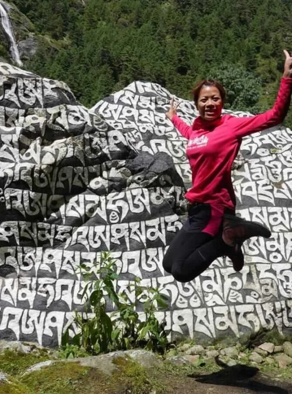
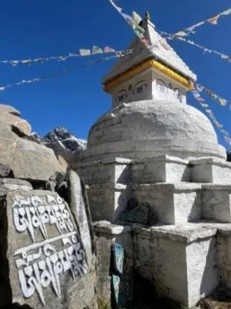
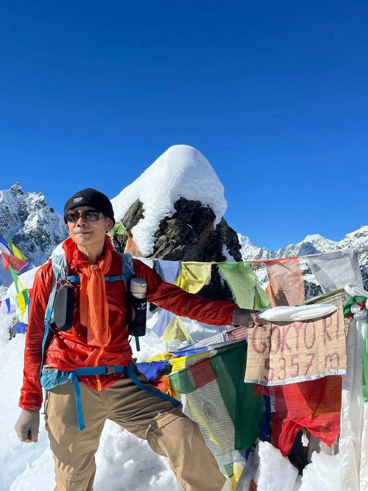
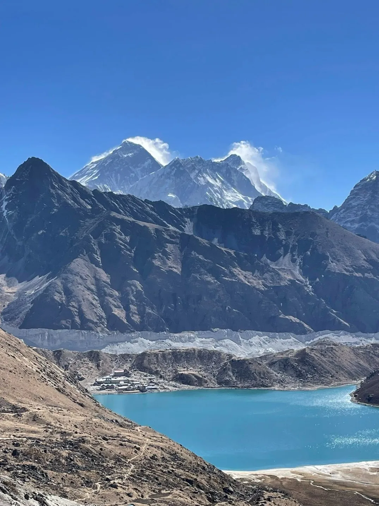
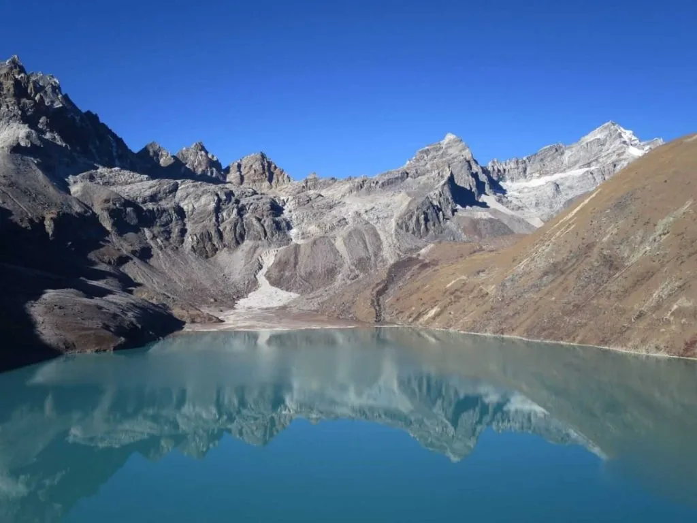
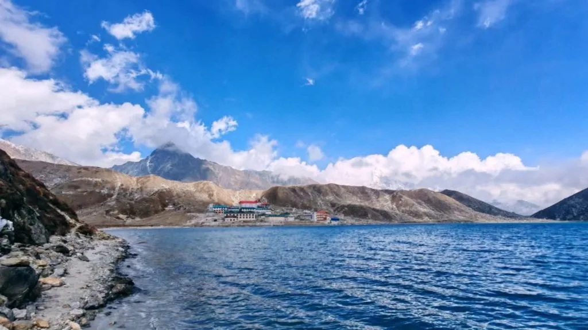

1. Executive Summary: The Classic 12-Day Gokyo Lakes Route
For trekkers who want the grand visual spectacle of Mount Everest without the dusty yak trains, overcrowded teahouses, and helicopter traffic of the standard Base Camp highway, the 12-day Gokyo Lakes Trek is the gold standard.
This expertly paced itinerary balances rapid aerobic conditioning in the lower Dudh Koshi gorge with conservative sleep elevations above 4,000 meters. You spend two nights in the vibrant market town of Namche Bazaar (3,440m), climb gradually through Dole and Machhermo, spend two nights on the turquoise lakeshore of Gokyo (4,750m), and return via the traditional agricultural village of Phortse.
12-Day Gokyo Trek Metrics at a Glance
- Trip Duration: 12 Days (10 trail days + 2 travel/flight buffer days).
- Starting / Ending Point: Lukla Airport (2,846m) / Kathmandu (1,400m).
- Highest Sleeping Elevation: 4,750m (15,584 ft) at Gokyo Third Lake (Dudh Pokhari).
- Highest Trekking Point: 5,357m (17,575 ft) at the summit of Gokyo Ri.
- Daily Walking Hours: 4 to 6 hours average (7 hours on Gokyo Ri summit day).
- Route Pattern: Lollipop loop (out via Dole, return via Phortse).
2. Elevation Profile & Strategic Acclimatization Curve

Ascending into the Gokyo Valley requires disciplined adherence to high-altitude medical safety guidelines. Here is the exact elevation profile for each overnight stage:
| Day | Overnight Settlement | Altitude (Meters / Feet) | Net Elevation Change | Acclimatization Status |
|---|---|---|---|---|
| Day 01 | Phakding Village | 2,610m / 8,563ft | -236m from Lukla (2,846m) | Introductory descent; rich oxygen levels |
| Day 02 | Namche Bazaar | 3,440m / 11,286ft | +830m steep ascent | First major threshold; shortness of breath on stairs |
| Day 03 | Namche Bazaar (Rest Day) | 3,440m / 11,286ft | Climb to 3,880m (HEV), sleep at 3,440m | 'Climb High, Sleep Low' golden rule |
| Day 04 | Dole | 4,040m / 13,254ft | +600m net gain (via Mong La 3,975m) | Crossing 4,000m barrier into alpine tundra |
| Day 05 | Machhermo | 4,470m / 14,665ft | +430m gain | Controlled ascent; steady pacing essential |
| Day 06 | Gokyo (3rd Lake) | 4,750m / 15,584ft | +280m gain | Highest sleep altitude; 57% oxygen level |
| Day 07 | Gokyo (Gokyo Ri Summit) | 5,357m / 17,575ft | +607m summit climb; return to 4,750m | Peak elevation of trek; half sea-level oxygen |
| Day 08 | Phortse Village | 3,810m / 12,500ft | -940m rapid descent | Deep restorative sleep in rich oxygen |
| Day 09 | Namche Bazaar | 3,440m / 11,286ft | -370m descent | Full physical recovery |
| Day 10 | Lukla | 2,846m / 9,337ft | -594m descent | End of trekking loop |
3. Days 1–3: Kathmandu to Namche Bazaar & Acclimatization

The opening three days establish the physical foundation of your trek:
- Day 01: Fly to Lukla & Trek to Phakding (7.8 km / 3.5 hrs). Board an early morning flight from Kathmandu or Ramechhap to Lukla's dramatic mountain runway. Meet your Sherpa porter team and begin hiking gently downhill through Chheplung to Phakding (2,610m) beside the rushing Dudh Koshi River.
- Day 02: Phakding to Namche Bazaar (10.5 km / 6.0 hrs). Enter Sagarmatha National Park at Monjo, cross five high suspension bridges (including the high Hillary Bridge), and tackle the grueling 600-meter vertical ascent of the Namche Hill to arrive at the Sherpa capital of Namche Bazaar (3,440m).
- Day 03: Acclimatization Day in Namche (5.5 km / 4.5 hrs). An active rest day. Hike up to the luxury terrace of Hotel Everest View (3,880m) for your first glorious view of Mount Everest, Ama Dablam, and Thamserku. Continue through Khumjung village to visit the Hillary School and Khumjung Gompa before descending back to Namche for the night.
4. Day 4: Namche Bazaar to Dole (4,040m) via Mong La
Today you say goodbye to the busy Everest Base Camp crowds and enter the tranquil Gokyo Valley:
- The Trail Fork at Sanasa: Follow the panoramic contour trail out of Namche until reaching the small settlement of Sanasa. Here, the trail splits: the right path heads to Tengboche and EBC, while our left path turns sharply uphill toward Gokyo.
- The Ascent to Mong La Pass (3,975m): A steady, switchbacking stone climb through rhododendron and birch forests brings you to the dramatic ridge of Mong La. Perched high above the river, the stupa at Mong La offers a sublime, unobstructed view of Ama Dablam soaring directly opposite.
- Descent to Phortse Thanga (3,680m): Drop 300 vertical meters through mossy fairy-tale woods to the river crossing at Phortse Thanga, where you stop for a hot lunch.
- The Final Climb to Dole (4,040m): Ascend for 2 hours through fragrant pine and juniper forests. Look closely in the canopy—this section is famous for sightings of the iridescent Himalayan Monal (Danfe) and musk deer! Arrive at the peaceful lodges of Dole nestled in a sheltered mountain cleft.
5. Day 5: Dole to Machhermo (4,470m): Along the High Valley Balcony

Distance: 6.0 km | Walking Time: 3.5 to 4.5 hours | Elevation Gain: +430m
Leaving Dole, the trail climbs immediately above the tree line. The lush rhododendrons disappear, replaced by dwarf alpine junipers and golden scrub grass.
The path contours along a wide balcony path high above the Dudh Koshi gorge. To the north, the immense ice flutes and hanging glaciers of Mount Cho Oyu (8,188m / 26,864 ft) dominate the skyline. You pass through the seasonal summer yak kharkas of Luza (4,360m) before descending gently into the wide glacial basin of Machhermo (4,470m).
Machhermo is legendary in Sherpa folklore: in 1974, a Sherpa woman tending yaks was reportedly attacked by a Yeti here! Today, Machhermo hosts a volunteer clinic operated by the Himalayan Rescue Association (HRA). Every afternoon at 3:00 PM during peak season, volunteer doctors give a fascinating free lecture on high-altitude physiology and AMS prevention.
6. Day 6: Machhermo to Gokyo Lake (4,750m): Reaching the Turquoise Waters

Distance: 7.0 km | Walking Time: 4.0 to 5.0 hours | Elevation Gain: +280m
Today is the visual climax of the approach journey:
- The Moraine Breach: Climb a steep rocky spur out of Machhermo past the memorial chortens. The valley narrows dramatically until you reach Pangka (4,480m), where a fatal avalanche struck in 1995.
- The Iron Bridge & 1st Lake: Scramble up steep stone steps beside the roaring meltwater torrent and cross a sturdy iron footbridge over the glacial outflow. Immediately, the valley opens up to reveal Longpongo (4,690m), the First Lake, with its deep green waters reflecting rocky crags.
- The 2nd Lake (Taujung): Continue along the level trail beneath the giant moraine wall of the Ngozumpa Glacier. Soon, the expansive, shimmering cobalt waters of Taujung Lake (4,710m) appear. Pairs of Ruddy Shelducks often float near the shore.
- Arrival at Gokyo (3rd Lake - 4,750m): A short 45-minute walk brings you to the grand expanse of Dudh Pokhari. Bright stone lodges with blue roofs sit directly on the eastern shoreline, framed by the sheer pyramid of Gokyo Ri and Cho Oyu. Check into your lodge and enjoy a warm lunch overlooking the turquoise water.
7. Day 7: Sunrise on Gokyo Ri (5,357m) & Trek to 4th and 5th Lakes

The Pinnacle Day of the Expedition:
Morning: Gokyo Ri Summit (5,357m)
Depart at 5:00 AM by headlamp. The climb is a steep, direct 607-meter ascent up switchbacking scree and grass. As the first rays of sun strike the summit pyramid of Mount Everest, Lhotse, Makalu, and Cho Oyu ignite in fiery amber and gold. The view of the turquoise lake 600 meters below is simply mesmerizing.
Afternoon: 4th & 5th Lakes Excursion
After descending for a late breakfast, take a relaxed 3-hour hike north along the glacier rim to Thonak Cho (4th Lake - 4,870m) and Ngozumpa Cho (5th Lake - 4,990m). From 'Scoundrel's Viewpoint', you stare directly into the gargantuan South Face of Cho Oyu!
8. Days 8–10: The Scenic Return via Phortse Village to Namche
Instead of retracing the exact same steps down through Dole, our itinerary takes the spectacular eastern valley balcony trail to Phortse Village:
- Day 08: Gokyo Lake to Phortse Village (14.5 km / 6.0 hrs). Retrace your steps past the 1st Lake to Machhermo, then take the high scenic trail on the eastern canyon rim. The path traverses high cliffs with dizzying views down into the gorge before arriving at Phortse (3,810m)—an ancient, stone-walled farming village renowned as the hometown of more Everest summitteers than any other place on Earth!
- Day 09: Phortse to Namche Bazaar (8.5 km / 4.5 hrs). Descend through birch woods to Phortse Thenga, climb gently to the stupa at Mong La, and follow the easy contour path back to Namche Bazaar (3,440m). Celebrate your summit success with fresh espresso, warm bakery pastries, and a hot shower!
- Day 10: Namche Bazaar Rest & Cultural Exploration. A buffer day in Namche to explore the Sherpa Culture Museum, shop for handmade souvenirs, or simply relax in a cozy cafe.
9. Days 11–12: Namche Bazaar to Lukla & Flight to Kathmandu
The final chapters of your Himalayan odyssey:
- Day 11: Namche Bazaar to Lukla (18.3 km / 6.5–7.5 hrs). The longest single walking day. Descend the steep stone stairs of the Namche Hill with trekking poles, cross the Hillary Suspension Bridge, and retrace the river path through Monjo, Bengkar, and Phakding. A final gentle uphill climb brings you back to Lukla (2,846m) for a farewell dinner with your guide and porters.
- Day 12: Morning Flight from Lukla to Kathmandu / Ramechhap. Board an early morning flight through the mountain peaks back to the capital. Transfer to your hotel, unpack, and celebrate an extraordinary Himalayan journey!
10. Epic Circuit Variants: Combining Gokyo with Cho La & Renjo La

If you have extra days and want a more challenging high-altitude expedition, consider these two legendary extensions:
| Variant Name | Total Days | Key Additions & High Passes | Difficulty |
|---|---|---|---|
| Gokyo Lakes & Cho La Pass to EBC | 16 to 17 Days | Crosses glaciated Cho La Pass (5,420m) to visit Everest Base Camp and Kala Patthar | Strenuous / Technical (Microspikes needed on pass glacier) |
| Gokyo Lakes with Renjo La Pass | 13 to 14 Days | Crosses Renjo La Pass (5,360m) into the remote Thame Valley and Marlung | Challenging (Steep high pass with no technical glacier) |
| Everest Three High Passes Trek | 19 to 21 Days | Combines Kongma La (5,535m), Cho La (5,420m), and Renjo La (5,360m) with EBC & Gokyo | Demanding Mountaineering Trek |
11. Master Day-by-Day Trekking Table: Distances, Times & Elevations
Here is your complete reference ledger for the standard 12-day Gokyo Lakes Trek:
| Day | Route Segment | Distance (km) | Hours | Elevation (Start ➔ Finish) | Difficulty |
|---|---|---|---|---|---|
| 01 | Fly Lukla ➔ Trek to Phakding | 7.8 km | 3.5 hrs | 2,846m ➔ 2,610m (-236m) | Easy |
| 02 | Phakding ➔ Namche Bazaar | 10.5 km | 6.0 hrs | 2,610m ➔ 3,440m (+830m) | Moderate / Steep |
| 03 | Namche Acclimatization Loop | 5.5 km | 4.5 hrs | 3,440m ➔ 3,880m ➔ 3,440m | Moderate |
| 04 | Namche Bazaar ➔ Dole | 11.2 km | 6.0 hrs | 3,440m ➔ 3,975m ➔ 4,040m | Challenging |
| 05 | Dole ➔ Machhermo | 6.0 km | 4.0 hrs | 4,040m ➔ 4,470m (+430m) | Moderate |
| 06 | Machhermo ➔ Gokyo (3rd Lake) | 7.0 km | 4.5 hrs | 4,470m ➔ 4,750m (+280m) | Moderate |
| 07 | Gokyo Ri Summit (5,357m) & 4th Lake | 8.5 km | 7.0 hrs | 4,750m ➔ 5,357m ➔ 4,750m | Strenuous |
| 08 | Gokyo Lake ➔ Phortse Village | 14.5 km | 6.0 hrs | 4,750m ➔ 3,810m (-940m) | Moderate |
| 09 | Phortse Village ➔ Namche Bazaar | 8.5 km | 4.5 hrs | 3,810m ➔ 3,440m (-370m) | Moderate |
| 10 | Buffer / Rest Day in Namche | N/A | Rest | 3,440m | Rest |
| 11 | Namche Bazaar ➔ Lukla | 18.3 km | 7.0 hrs | 3,440m ➔ 2,846m (-594m) | Long / Moderate |
| 12 | Fly Lukla ➔ Kathmandu | Flight | 35 mins | 2,846m ➔ 1,400m | Transit |
12. Teahouses, Meals & Infrastructure on the Gokyo Trail

Teahouse infrastructure in the Gokyo Valley is high quality and comfortable:
- Rooms: Standard unheated twin rooms with foam mattresses, clean sheets, and pillows. A down sleeping bag (-10°C) is mandatory for night warmth.
- Dining: Dining halls are heated from 4:30 PM with central stoves. Menus feature hot garlic soup (proven altitude remedy), dal bhat with unlimited refills, Tibetan momos, potato rosti, and yak cheese omelets.
- Showers & Power: Gas-heated hot showers ($4–$5 USD) and solar device charging ($2–$4 per full charge) are available throughout the route.
- Connectivity: Mobile 4G (NTC and Ncell) operates reliably up to Dole and in parts of Gokyo, supplemented by prepaid Everest Link Wi-Fi cards ($20 for 10 GB).
13. Fitness Standards & Specialized Gear for Gokyo Ri
Climbing Gokyo Ri on Day 7 requires specific physical preparation and cold-weather gear:
Fitness Benchmarks
Gokyo Ri ascends over 600 vertical meters in just 2.5 kilometers. You need strong calf muscles and sustained aerobic stamina. Train for 6 to 8 weeks before your trip with stair climbing, weighted incline treadmill walks, and weekend hill hikes.
Pre-Dawn Summit Gear
Departing at 5:00 AM means temperatures will be -10°C to -15°C with wind chill. Pack your heavy 800-fill down jacket, windproof shell pants over thermals, warm mittens, buff neck gaiter, and a headlamp with fresh lithium batteries.
14. Frequently Asked Questions: Gokyo Lakes Itinerary
How many days does the Gokyo Lakes trek take?
The classic Gokyo Lakes trek takes 12 days round-trip from Kathmandu. This includes 9 days of active mountain hiking, 1 full acclimatization day in Namche Bazaar, and 2 days for domestic flights and Kathmandu transit.
Is the Gokyo Lakes trek harder than Everest Base Camp?
They have similar overall difficulty ratings (Grade 3 Strenuous). However, the summit climb of Gokyo Ri (5,357m) is steeper and physically tougher than Kala Patthar. On the other hand, Gokyo has shorter daily trail distances and far fewer crowds, making the overall experience more relaxed.
Can I combine Gokyo Lakes and Everest Base Camp?
Yes! By crossing the glaciated Cho La Pass (5,420m), you can link the Gokyo Valley directly to the Khumbu Valley, visiting both Gokyo Ri and Everest Base Camp in a 16-to-17-day circuit.
What is the best month to do the Gokyo Lakes trek?
The best months are October and November in Autumn (crystal-clear blue skies, sparkling turquoise lake water, sharp mountain clarity) and March, April, and May in Spring (warmer weather, melting lake ice floes, blooming rhododendrons).
Do I need technical mountaineering equipment for Gokyo Ri?
No. Gokyo Ri (5,357m) is a non-technical trekking peak. It requires no ropes, harnesses, or ice axes. You only need sturdy waterproof trekking boots, warm layers, a headlamp, and trekking poles.
Are there ATMs in Gokyo?
No, there are zero ATMs past Namche Bazaar. You must withdraw all cash in Nepalese Rupees (NPR) in Kathmandu or Namche to cover snacks, charging, hot showers, and tips for the rest of your trek.
Can I get altitude sickness on the Gokyo trek?
Yes. Sleeping at 4,750m at Gokyo Third Lake carries a genuine risk of Acute Mountain Sickness (AMS). Our itinerary mitigates this by enforcing two nights in Namche Bazaar (3,440m) and progressive 400m daily elevation gains through Dole and Machhermo.
Is it possible to return from Gokyo by helicopter?
Yes! Many trekkers choose to hike to Gokyo Lake and summit Gokyo Ri, and then take a scenic helicopter flight directly from Gokyo (4,750m) back to Kathmandu, reducing the trip from 12 days to just 7 or 8 days!

Ready to Experience the Himalayas?
Whether you are preparing for high-altitude trekking, cultural circuits, or alpine summit expeditions, start planning a bespoke journey tailored to your fitness, travel season, and style.